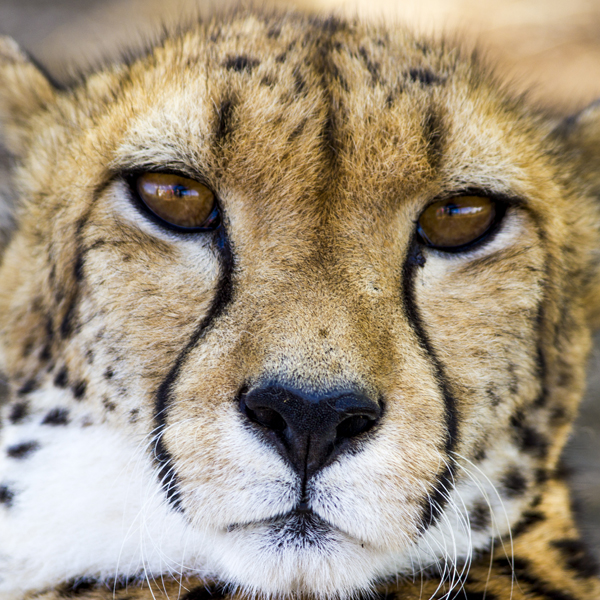

The safest way to experience Acinonyx jubatus!
The cheetah (Acinonyx jubatus) is a large felid of the subfamily Felinae that occurs mainly in eastern and southern Africa and a few parts of Iran. The only extant member of the genus Acinonyx, the cheetah was first described by Johann Christian Daniel von Schreber in 1775. The cheetah is characterised by a slender body, deep chest, spotted coat, a small rounded head, black tear-like streaks on the face, long thin legs and a long spotted tail. Its lightly built, slender form is in sharp contrast with the robust build of the big cats, making it more similar to the cougar. The cheetah reaches nearly 70 to 90 cm (28 to 35 in) at the shoulder, and weighs 21–72 kg (46–159 lb). Though taller than the leopard, it is notably smaller than the lion. Typically yellowish tan or rufous to greyish white, the coat is uniformly covered with nearly 2,000 solid black spots.
Cheetahs are active mainly during the day, with hunting their major activity. Adult males are sociable despite their territoriality, forming groups called "coalitions". Females are not territorial; they may be solitary or live with their offspring in home ranges. Carnivores, cheetah mainly prey upon antelopes and gazelles. They will stalk their prey to within 100–300 metres (330–980 ft), charge towards it and kill it by tripping it during the chase and biting its throat to suffocate it to death. The cheetah's body is specialised for speed; it is the fastest land animal. The speed of a hunting cheetah averages 64 km/h (40 mph) during a sprint; the chase is interspersed with a few short bursts of speed, when the animal can attain 112 km/h (70 mph), although this is disputed by more recent measurements. Cheetahs are induced ovulators, breeding throughout the year. Gestation is nearly three months long, resulting in a litter of typically three to five cubs (the number can vary from one to eight). Weaning occurs at six months; siblings tend to stay together for some time. Cheetah cubs face higher mortality than most other mammals, especially in the Serengeti region. Cheetahs inhabit a variety of habitats – dry forests, scrub forests and savannahs.
Thanks to its prowess at hunting, the cheetah was tamed and used to kill game at hunts in the past. The animal has been widely depicted in art, literature, advertising and animation.
Classified as vulnerable by the International Union for Conservation of Nature (IUCN), the cheetah has suffered a substantial decline in its historic range due to rampant hunting in the 20th century. Several African countries have taken steps to improve the standards of cheetah conservation. By late 2016-early 2017, the cheetah's global population had fallen to approximately 7,100 individuals in the wild due to habitat loss, poaching, the illegal pet trade, and conflict with humans, with researchers suggesting that the animal be immediately reclassified as "Endangered" on the IUCN Red List.
